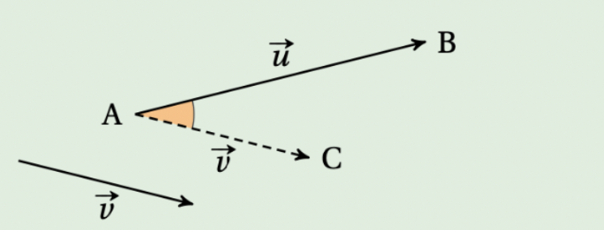
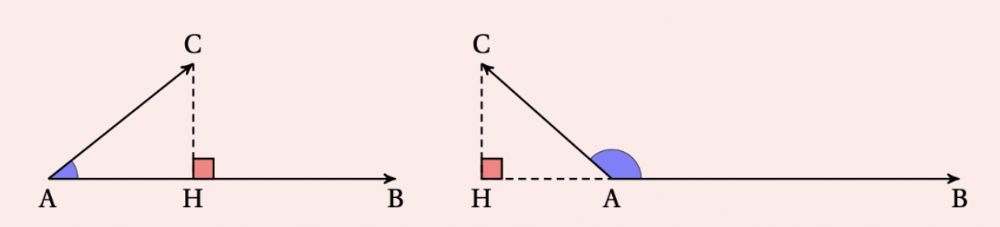
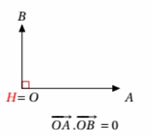

Chapitre 9 - Le Produit Scalaire
I - Définition et premières propriétés
Le produit scalaire de deux vecteurs \(\vec{u}\) et \(\vec{v}\) est un nombre réel. On le note \(\vec{u} \cdot \vec{v}\).
À retenir :
- Si l'un des vecteurs est le vecteur nul \(\vec{0}\), le produit scalaire est égal à \(0\).
- L'ordre n'importe pas : \(\vec{u} \cdot \vec{v} = \vec{v} \cdot \vec{u}\).
- Le produit scalaire peut être positif, négatif ou nul.
II - Formule avec le Cosinus
On utilise cette formule quand on connaît l'angle entre les deux vecteurs.
\(\vec{u} \cdot \vec{v} = \|\vec{u}\| \times \|\vec{v}\| \times \cos(\vec{u}, \vec{v})\)

Signe du produit scalaire selon l'angle :
- Angle aigu (entre 0° et 90°) : le produit scalaire est positif.
- Angle obtus (entre 90° et 180°) : le produit scalaire est négatif.
- Angle droit (90°) : le produit scalaire est nul.
III - Utilisation du projeté orthogonal
Cette méthode est très pratique dans les figures géométriques (carrés, rectangles).
Soient \(A, B\) et \(C\) trois points. Soit \(H\) le projeté orthogonal de \(C\) sur la droite \((AB)\).
- Si \(\vec{AB}\) et \(\vec{AH}\) sont de même sens : \(\vec{AB} \cdot \vec{AC} = AB \times AH\)
- Si \(\vec{AB}\) et \(\vec{AH}\) sont de sens contraires : \(\vec{AB} \cdot \vec{AC} = - AB \times AH\)

IV - Formule avec les coordonnées
Dans un repère orthonormé, avec \(\vec{u}\begin{pmatrix} x \\ y \end{pmatrix}\) et \(\vec{v}\begin{pmatrix} x' \\ y' \end{pmatrix}\) :
\(\vec{u} \cdot \vec{v} = x \times x' + y \times y'\)
V - Orthogonalité
Dire que deux vecteurs non nuls sont perpendiculaires revient à dire que leur produit scalaire est nul :
\(\vec{u} \perp \vec{v} \iff \vec{u} \cdot \vec{v} = 0\)

VI - Formules avec les Normes (Polarisation)
Ces formules sont hyper utile dans certain cas précis (permet de calculer le produit scalaire uniquement avec des longueurs, sans angle ni projeté)
Formules à connaître :
\(\vec{u} \cdot \vec{v} = \frac{1}{2} \left( \|\vec{u} + \vec{v}\|^2 - \|\vec{u}\|^2 - \|\vec{v}\|^2 \right)\)
Ou sa variante avec la différence :
\(\vec{u} \cdot \vec{v} = \frac{1}{2} \left( \|\vec{u}\|^2 + \|\vec{v}\|^2 - \|\vec{u} - \vec{v}\|^2 \right)\)
VII - Règles de calcul
Le produit scalaire fonctionne comme une multiplication habituelle :
- \(\vec{u} \cdot (\vec{v} + \vec{w}) = \vec{u} \cdot \vec{v} + \vec{u} \cdot \vec{w}\)
- \((k\vec{u}) \cdot \vec{v} = k \times (\vec{u} \cdot \vec{v})\)
Identités remarquables :
- \((\vec{u} + \vec{v})^2 = \|\vec{u}\|^2 + 2\vec{u}\cdot\vec{v} + \|\vec{v}\|^2\)
- \((\vec{u} - \vec{v})^2 = \|\vec{u}\|^2 - 2\vec{u}\cdot\vec{v} + \|\vec{v}\|^2\)